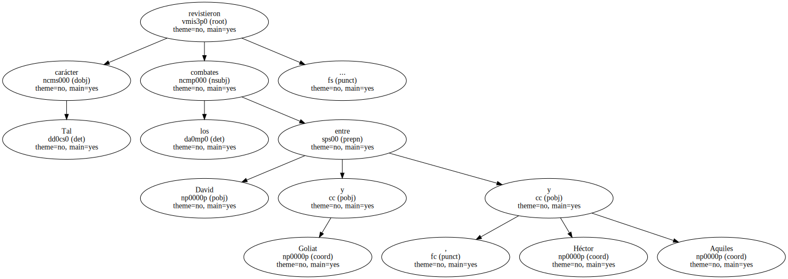
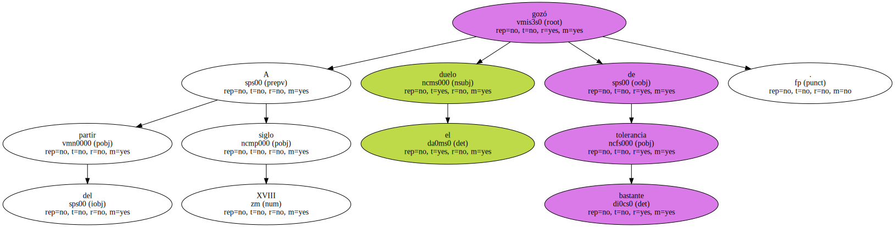

De todas formas , entre griegos y romanos existió una forma peculiar de combate , no para dirimir agravios personales sino para decidir la victoria entre dos pueblos en discordia y evitar el choque de los dos ejércitos enemigos.
Tal carácter revistieron los combates entre David y Goliat , Héctor y Aquiles.
Cuentan Tácito y César en sus libros que las tribus germanas solían resolver sus batallas en combates singulares a espada.
Más tarde la invasión de los bárbaros introdujo el denominado - duelo judiciario - o juicio de Dios durante la Edad Media , época en que los nobles y hombres libres lo utilizaron como procedimiento para zanjar sus diferencias.
A partir del siglo IX se desarrolló en el seno de la Iglesia un movimiento de hostilidad contra el duelo judicial.
El Concilio de Letrán lo prohibió en 1215 y , al robustecerse el poder público por los códigos civiles , los monarcas adoptaron medidas contra él.
Revestido de un carácter privado , el duelo subsistió y hasta nuestro siglo ha llegado el denominado lance de honor a espada , sable o pistola , ante testigos y sujeto a ciertas reglas establecidas en los códigos de honor.

Fue quizá la costumbre importada desde Italia hacia el siglo XV de llevar espada como un accesorio más de la indumentaria cotidiana la que facilita que en cualquier momento y lugar se pudiera restablecer el honor lesionado.
A partir del siglo XVIII el duelo gozó de bastante tolerancia.
En toda la literatura de la época , sobre todo en el drama romántico , se suceden las escenas : famosos son los lances del Tenorio de Zorrilla el Duque de Rivas también hace hablar a las espadas en su - Don Álvaro o la fuerza del sino - y las escaramuzas de los Tres Mosqueteros han dado la vuelta al mundo.
El código del honor obligaba a los duelistas a observar unas reglas fijas establecidas : ambos contendientes habían de poseer el mismo rango social , de lo contrario las diferencias pasaban a solventarse en un juicio ordinario ; habían de llevar dos padrinos o testigos , encargados de determinar el grado de la ofensa , decidir la fecha , el terreno , el tipo de arma y la distancia que mediaría entre los adversarios.